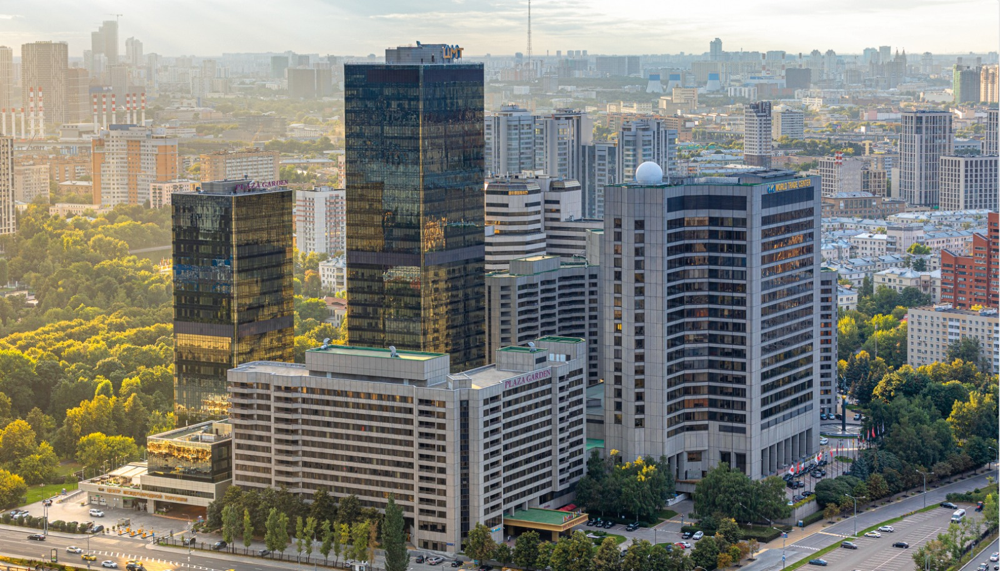
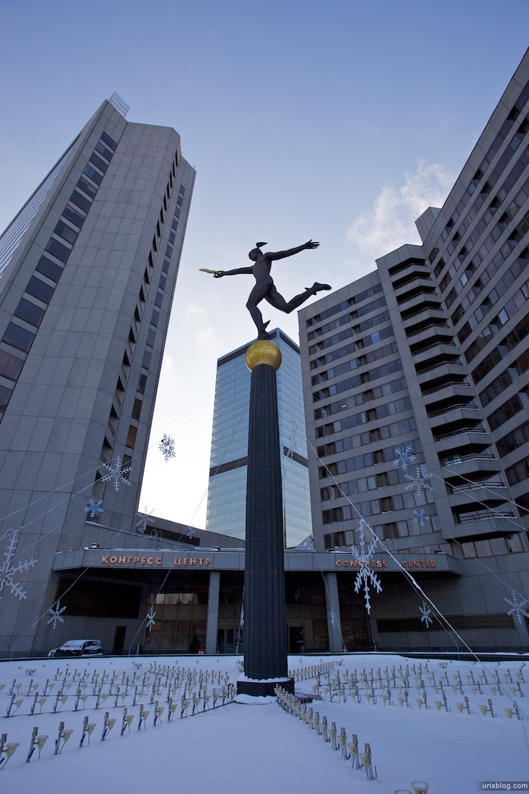

О компании
Центр международной торговли Москвы (ЦМТ)
Один из крупнейших многопрофильных бизнес-комплексов России, расположенный в центре Москвы, в непосредственной близости от Кремля, Дома Правительства Российской Федерации и здания Правительства Москвы.
ЦМТ – место, где каждый может почувствовать деловую атмосферу Москвы. Вот уже 40 лет здесь кипит деловая жизнь столицы: в ЦМТ заключаются важные сделки, устанавливаются международные связи и проводятся встречи, форумы и конгрессы.
ЦМТ Москвы предоставляет более 500 услуг мирового уровня для эффективной работы и полноценного отдыха: от аренды офиса и переговорной комнаты любой площади до организации торжества, от круглосуточной охраны и просторного паркинга до консультации нотариуса, почты и химчистки, от изысканных ресторанов, магазинов до салонов красоты и фитнес-центра.
ЦМТ Москвы с 1974 года является членом Ассоциации центров международной торговли (АЦМТ), которая объединяет свыше 300 центров международной торговли и более 750 000 компаний почти в 100 странах мира. ЦМТ также является членом Международной ассоциации конгресс-центров (AIPC), а также Международной ассоциации конгрессов и конференций и Российского союза выставок и ярмарок (РСВЯ). Услуги сертифицированы АЦМТ и полностью соответствуют высочайшим международным стандартам, что отмечено большим числом правительственных благодарностей, отраслевых российских и международных наград.
Так, Постановлением Кабинета Министров РФ №485 от 16 мая 2012 года ЦМТ присуждена Премия Правительства Российской Федерации в области качества за достижение значительных результатов в области качества продукции и услуг и внедрение высокоэффективных методов менеджмента качества.ГАЛЕРЕЯ

Год создания:
Был построен в 1980 году по проекту коллектива архитекторов — Михаила Посохина (руководитель), Владимира Кубасова и Петра Скокана; до середины 1990-х годов носил название «Совинцентр», по названию крупнейшего из всесоюзных внешнеторговых объединений системы ТПП СССР, в систему выставочно-представительских учреждений которой он входил.В 1988—1989 году в Совинцентре проводились игры телепрограммы «Что? Где? Когда?»
Направления деятельности:
ЦМТ Москвы предоставляет более 500 услуг мирового уровня для эффективной работы и полноценного отдыха: от аренды офиса и переговорной комнаты любой площади до организации торжества, от круглосуточной охраны и просторного паркинга до консультации нотариуса, почты и химчистки, от изысканных ресторанов, магазинов до салонов красоты и фитнес-центра.